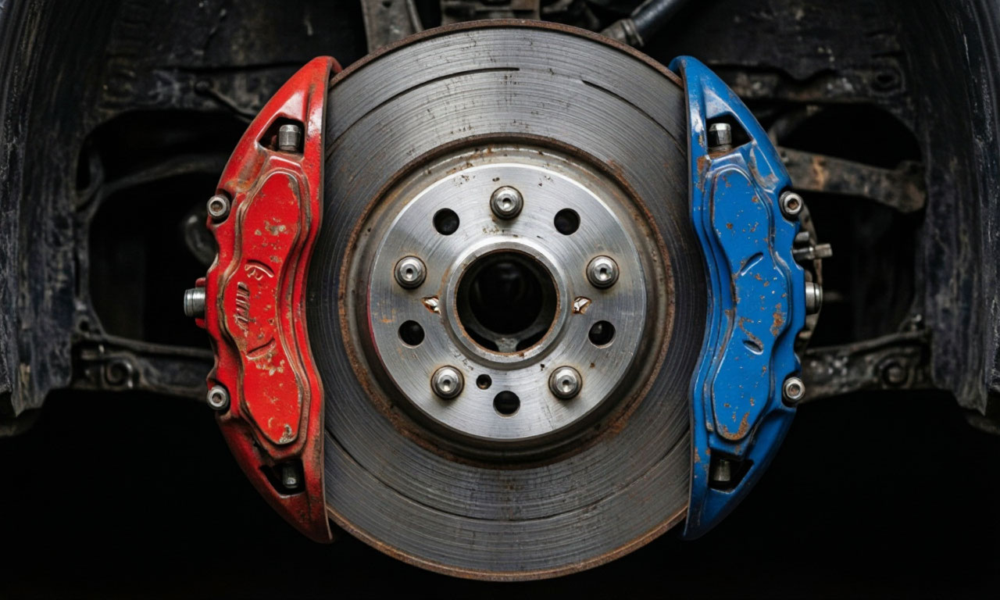

← На главную
🛑 Износ тормозных колодок
Когда менять? Точный прогноз остатка ресурса в километрах.

Новая толщина колодки (мм)
Текущая толщина (мм)
Минимально допустимая толщина (обычно 3 мм)
Пробег с момента замены (км)
Тип вождения
Спокойное (город/трасса)
Среднее (смешанный цикл)
Агрессивное (частые разгоны/торможения)
Рассчитать остаток
0 км
До критического износа
💡 Совет: Если осталось менее 2000 км, закажите колодки заранее. Экономия на качестве здесь недопустима.